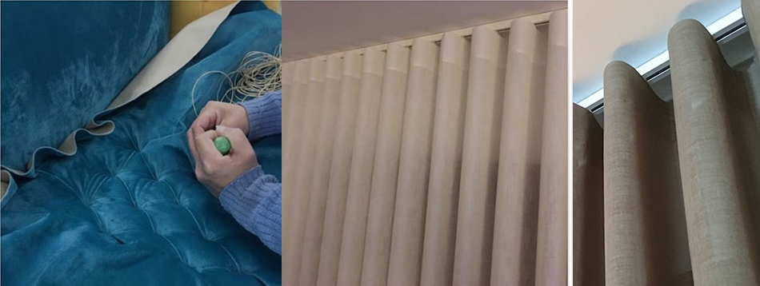

Relevo
No estofo azul, a repetição de pregas e pontos cria um desenho que se percebe de perto.
O DETALHE
O tecido ganha relevo. A dobra desenha uma linha. O pormenor dá outra leitura ao conjunto.

No estofo azul, a repetição de pregas e pontos cria um desenho que se percebe de perto.
Nos cortinados, o tecido e as dobras dão ritmo à superfície e ao enquadramento da janela.
A escolha de uma peça também depende do espaço onde vai ficar. Leve essa referência para a conversa.
COMEÇAR PELA SUA IDEIA